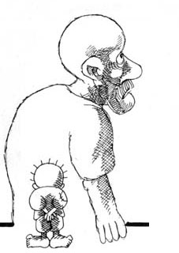

Naji al-Ali and HanthalaHere we will offer information about the establishment of Hanthala. Additionally, here you can find information about Naji al-Ali, about Hanthala, a symbol of the Palestinian struggle, a written article by Naji al-Ali himself, from which we derived our mandate. Also coming up, our guidelines and objectives for the future, with which we started this summer, based on continued discussions with the beginning of Hanthala Palestine.
HANTHALA PALESTINE: THE NETWORK
NAJI AL-ALI AND HANTHALA
- My signature, Hanthala: The Symbol of the Child by Naji al-Ali
- I am from Ain Al-Helwa by Naji al-Ali
- With his blood Naji al-Ali drew for Palestine
- Remembering the "conscience" of Palestine
- Frankly speaking: An interview with Ba'ha Bukhari, cartoonist of al-Quds
- An Ongoing Crisis of Confidence
- Naji Al Ali: Martyrdom for a patriotic artist
- Naji Al-Ali's charicatures historical witness
Here you can find two papers which cought our attention: